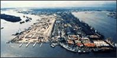

LAGOS-拉各斯简介

港口性质：海湾河口港、基本港（C、M）
易区经纬度：06度27分N，003度24分E
航 线：西非
位于尼日利亚（全称：尼日利亚联邦共和国THE FEDERAL REPUBLICOF NIGERIA）南部沿海奥贡（OGUN）河口，濒临贝宁（BENIN）湾的北侧，是尼 日利亚的最大港口。始建于20世纪初，由6个岛屿和周围一大部分大陆组成，并有宽阔的高架铁桥相连，是著名的水上城市，故有"非洲威尼斯"之称。现为尼日利亚的经济、文化和交通中心。交通运输发达，铁路可通西北部的恩古鲁（NGURU），并经卡杜纳（KADUNA）直达哈科特港（PORT HARCOURT）。公路可与国内各地连网。本港是西非最重要的航空中心，有23家外国航空公司的航班及24条航线连接世界上47个城市，每周有航班达300多次。该港同周围地区组成的全国最大的工业地带，其产值约占全国的一半。主要工业有榨油、纺织、可可加工、汽车装配、机械、造纸、橡胶、造船、金属加工及炼油等，并拥有大型榨油厂。该港有拉各斯大学、图书馆及博物馆等文化设施，还有尼日利亚的重要旅游和疗养胜地。港口距国际机场约14km
该港属热带雨林气候。年平均最高气温约30度，最低约20度。每年11月至次年2月多雾。全年平均降雨量约3000mm，6~9月为雨季。平均潮高，大潮为0.94m，小潮为0.13m。
装卸设备有各种岸吊、可移式吊、集装箱吊、浮吊、皮带机、集装箱跨运车、叉车、拖船及滚装设施等，其中集装箱门吊最大起重能力达40吨，可移式吊为50吨，浮吊达250吨，拖船的功率最大为1324kW。港区有库场面积达24万平方米。大船锚地水深达18米。1992年集装箱吞吐量达14.7万TEU。主要出口货物为花生、菜油、可可、橡胶、木材、棕榈果、棉花籽、皮张、锌及废钢等，进口货物主要有纺织品、面粉、机械、水泥、盐、糖、啤酒、糖果、食品。在节假日中国庆日、耶稣受难日及圣诞节不工作。